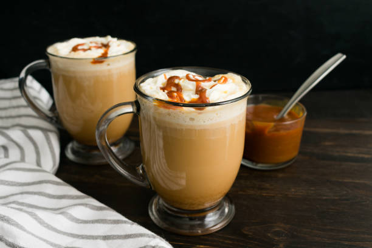

Flat White. Daha yoğun bir kahve deneyimi için ekstra espresso ile hazırlanarak latte sanatı ile tamamlanmış latte
 Caramel Macchiato. Vanilya şurubu üzerine buharla özenle ısıtılmış süt, süt köpüğü ve espresso dokunuşu, karamel sosla süslenerek sunulur.